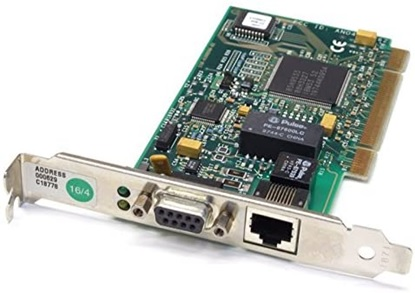
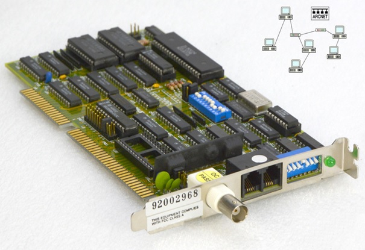

Tipos de tarjetas y funcionamiento
Como se ha mencionado en la introducción, la tarjeta de red sensu stricto es un dispositivo integrado a la placa base y no una tarjeta. Puede recibir diversos nombres como: placa de red, adaptador de red, adaptador LAN, interfaz de red, Network Interface Card o Controller.
A continuación, se describirán dos de las antiguas y las dos que existen actualmente
1. Token Ring:
La tarjeta de red Token Ring (figura 1.1) permite trabajar en una arquitectura, diseñada por IBM en los años 70, con una topología lógica en forma de anillo que utiliza el estándar IEEE 802.5. Entendiendo por topología la forma como se intercambian datos a través de una familia de comunicación en la red, es decir, la manera como está diseñada la red, sea en el plano físico o lógico.
Para esta topología, todas las estaciones de la red de área local (LAN) están conectadas como anillo lógico sobre una estructura física de estrella, ya que la transmisión de datos se produce, a nivel abstracto, en forma de anillo. Para ello, la topología token ring se compone de unidades de acceso a múltiples estaciones (MAU, por sus siglas en inglés) que permiten la conexión de los ordenadores en forma de estrella. El distribuidor es un nodo conectado con toda la red. Así bien, los datos siempre son llevados hasta la MAU y desde allí al siguiente en el orden fijado.
Existe una metodología que permite evitar los colapsos por la cantidad de datos enviados. Solo los ordenadores que tengan el token, en ese momento, podrán enviar paquetes de datos a la red. El token es transferido de unos a otros en forma de anillo.
El token es un frame de 3 bytes de capacidad, en el cada byte cumple una función. El tercer byte (start delimeter), este byte muestra dónde comenzará el token. El segundo byte (Access control), es llamado también token bit y es el que contiene el control de acceso. Finalmente, el primer byte (end delimeter), que es el que indica que el frame termina.
Por lo tanto, cuando un ordenador envía alguna información cambia el token bit y adjunta al token el paquete de datos que quiere enviar. Sin embargo, el paquete no llega inmediatamente al receptor, sino que recorre la MAU por todos los participantes hasta llegar a la estación correcta. Es importante señalar, que cada uno de los participantes funcionará como repetidor (leyendo, cargando y enviando el paquete nuevamente al anillo) para evitar que la señal pierda intensidad por el camino. Una vez que la información llega a la estación de destino, se copia la información, confirma la correcta recepción de los datos mediante un cambio en el status del frame y vuelve a enviar el paquete. Llegado éste al emisor inicial, se borra los datos y vuelve a liberar el token bit. Si no se quiere enviar ninguna información cuando el ordenador recibe el frame, lo reenvía por orden al siguiente ordenador.
2. Attached Resource Computer NETwork (ARCNET):
La tarjeta ARCNET (figura 1.3) permite trabajar en una arquitectura de red local que utiliza la técnica de paso de testigo como Token Ring, pero en este caso su topología tiene forma de estrella (figura 1.4).
El testigo se mueve de un equipo a otro de acuerdo con el orden en que estén conectadas en el hub, independientemente de cómo estén situados físicamente. El paquete ARCNET estándar contiene: una dirección de destino, una dirección de origen y hasta 508 bytes de datos.
3. Ethernet:
Ethernet es una tecnología que permite que los dispositivos de redes de datos conectados por cable se comuniquen entre sí, vinculando el software y/o hardware (figura 1.5). La comunicación se hace a través de cables de red LAN mediante el protocolo Ethernet donde se pueden intercambiar paquetes de datos. Actualmente, el protocolo es el IEEE 802.3.
En su funcionamiento, a cada dispositivo se le asigna una dirección propia llamada dirección Media Access Control Address (MAC). Ésta es la dirección de hardware única en el mundo de un adaptador de red. Se usa para la identificación de un dispositivo en una red de ordenadores. Ahora bien, los participantes de esta red conjunta pueden transmitir mensajes con alta frecuencia. Además, Ethernet tiene una topología lógica y puede estructurarse como bus o como estrella.
La comunicación se basa en el algoritmo Carrier Sense Multiple Access/Collision Detection (CSMA/CD) (figura 1.6). Este método comunicación es muy similar al de una mesa redonda donde cada participante deja que el otro se exprese. Se puede dar el caso que dos mensajes colisionen, entonces los participantes intentarán realizar una nueva transmisión en intervalos aleatorios. La colisión de los datos se evita si la señal de interferencia llega al receptos antes que el paquete de datos. Por otra parte, la velocidad de la señal y la tasa de transmisión son los que regulan la comunicación definiendo el frame de datos.

Para analizar los posibles usos indebidos y averías se requiere de un uso serio de todos los sistemas y de los análisis de datos habituales, como un análisis LAN. Por otra parte, los conmutadores se encargan de distribuir eficientemente los paquetes de datos, reduciendo el riesgo de colisiones. Para agilizar el flujo de datos en otras partes se utiliza el mecanismos Ethernet Flow Control. Este mecanismo, detiene temporalmente o totalmente la transmisión de datos con el fin de mejorar la transmisión de datos especialmente en el modo dúplex.
En resumen, Ethernet envía paquetes de datos a la red usando frames, que incluyen los datos y dirección de donde provienen (VLAN), información de corrección de errores y calidad de servicio de información. En una red tradicional basada en concentradores (hub), el paquete se envía cuando la ruta este libre. A medida que el paquete se moviliza a través de la red, cada uno de los dispositivos verifican si son los destinatarios de este paquete, siendo recibidos si son los destinatarios. Es importante señalar, que si hay un paquete de datos usando la red, se esperará hasta que la ruta este despejada antes de enviar el paquete a la red más grande.
Mientras que con el método switch/conmutador, se eliminan los problemas de red en uso porque solo envía los paquetes al puerto especificado, en lugar de la red completa (figura 1.5).
4. WiFi
Wifi es una tecnología que permite la interconexión inalámbrica de dispositivos. Para ello, necesita un punto de acceso de red inalámbrica (generalmente un router). Existe en diversos formatos, como: tarjetas PCI, tarjetas PCMCIA, adaptadores USB y tarjetas Compact Flash (ver figura 1.7).
El funcionamiento de la Wifi se puede dar según el modo de infraestructura. Este método permite conectar ordenadores equipados de una tarjeta de red Wifi por medio de uno o varios puntos de acceso (AP) que actúan como conectores. La implementación de este tipo de red requiere poner bornes AP a intervalos regulares en la zona que debe ser cubierta por la red. Los bornes deben estar configurados con el mismo SSID (nombre de la red) para que puedan comunicarse. Este modo tiene la ventaja que garantiza un paso por la AP, permitiendo verificar así a quién entra en la red. Sin embargo, tiene una desventaja, no puede crecer sino se le colocan más bornes.
El modo “Ad-Hoc” es un modo de funcionamiento que permite la comunicación directa entre ordenadores que poseen una tarjeta de red Wifi, sin necesidad de utilizar otro dispositivo como en punto de acceso (AP). Este modo es ideal para interconectar rápidamente equipos entre ellos sin material suplementario (Ejemplo: intercambio de archivos entre PC portátiles en un tren, compartir el acceso a Internet en el hogar, en la calle, en el café, etc.). La implementación de una red de este tipo se limita a configurar los equipos en modo Ad-Hoc (en lugar del modo Infraestructura), la selección del canal (frecuencia) y de un SSID (nombre de la red) común a todos. La ventaja de este modo es que elimina materiales suplementarios costosos, es más fácil implementarlo. Gracias a la adición de un programa de enrutamiento dinámico (Ejemplo: OLSR, AODV, etc.) la red crece automáticamente con la conexión de nuevos equipos.